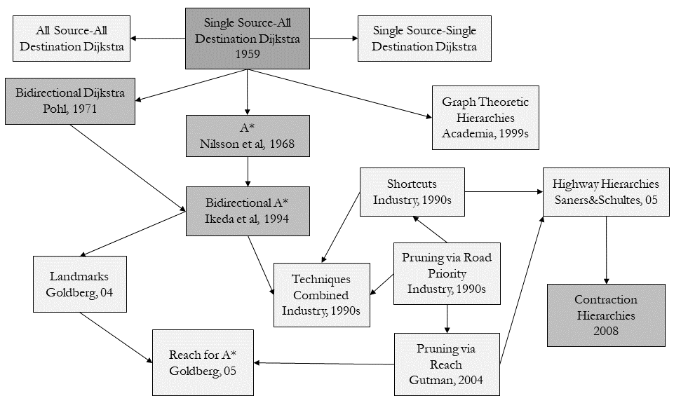
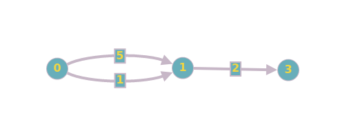
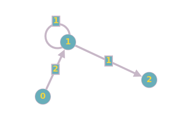

Blind Search Algorithms¶
Blind Search algorithms can be split into traversal and shortest path algorithms.
Graph Traversal Algorithms¶
Graph traversal refers to a process that traverses vertices of a graph following a certain order (starting from user-input sources). This category of graph search algorithms only seeks to find a path between two nodes, without optimizing for the length of the final route. In applications where the weight of edges in a graph are all equal (e.g. 1), BFS and DFS algorithms outperform shortest path algorithms like Dijkstra’s.
Setup¶
Let’s first find the largest connected component centered around our location, with a specified distance on each side. The reference point is the centre of the University of Toronto’s downtown campus.
To plot the network, we will also need to highlight the starting and ending nodes. For the sake of simplicity, we will use the node id directly. To review how to get the closest node to a given location, refer back to the previous section.
Note
This book uses the smart_mobility_utilities package for some operations, in order to simplify the process of visualizing graphs. You can find out more about downloading and installing the package here.
import osmnx
reference = (43.661667, -79.395)
G = osmnx.graph_from_point(reference, dist=300, clean_periphery=True, simplify=True)
highlighted = [389677909, 55808290]
# marking both the source and destination node
nc = ['red' if node in highlighted else '#336699' for node in G.nodes()]
ns = [50 if node in highlighted else 8 for node in G.nodes()]
fig, ax = osmnx.plot_graph(G, node_size=ns, node_color=nc, node_zorder=2)
Let’s visualize the above graph on a ipyleaflet map, using a helper function from the smart_mobility_utilities package.
from smart_mobility_utilities.viz import draw_map
draw_map(G,highlight=highlighted, force_leaflet=True)
Warning
For the purposes of this map, we use the force_leaflet option so that the map will be rendered by ipyleaflet. Normally, when there are more than 1,000 nodes in a graph, ipyleaflet performance is very slow. The visualization tools in smart_mobility_utilities will automatically switch to folium when there are more than 1,000 nodes, unless the force_leaflet flag is used. See the docs for smart_mobility_utilities for more information.
Currently, each node in the above graph is represented as a python dict with many attributes that are of no interest to us. This makes accessing certain properties of nodes overly complicated and verbose. To minimize this, we can use the Node class from smart_mobility_utilities.common to redefine the nodes, and only retain key information like parent, edge length from parent, and the node itself.
from smart_mobility_utilities.common import Node
# First convert the source and destination nodes to Node
origin = Node(graph=G, osmid=55808290)
destination = Node(graph=G, osmid=389677909)
Breadth-first Search (BFS)¶
BFS is an algorithm where the traversal starts at a specified node (the source or starting node) and continues along the graph layerwise, thus exploring all exploring all of the the current node’s neighbouring nodes (those which are directly connected to the current node). If a result is not found, the algorithm proceeds to search the next-level neighbour nodes.
explored ← empty
found ← False
while frontier is not empty and found is False do
add node to explored
for child in node.expand() do
found ← True
Using BFS, search for the shortest path between The Equestrian Statue and the Bahen Centre. This example uses the same data as in From Road Network to Graph.
from collections import deque
from smart_mobility_utilities.common import cost
from smart_mobility_utilities.viz import draw_route
route = []
frontier = deque([origin])
explored = set()
found = False
while frontier and not found:
node = frontier.popleft()
explored.add(node)
for child in node.expand():
if child not in explored and child not in frontier:
if child == destination:
route = child.path()
found = True
frontier.append(child)
print("Route: \n",route,"\n\n Cost:\n",cost(G,route))
draw_route(G, route)
Route:
[55808290, 304891685, 55808284, 1721866234, 389678268, 4953810915, 389678267, 24960090, 24960068, 1258698109, 389678145, 24960070, 24960073, 24960076, 24960080, 6028561924, 5098988924, 389678131, 2557539841, 389678133, 389677909]
Cost:
954.727
Depth-first Search (DFS)¶
The DFS algorithm is a recursive algorithm that uses the idea of backtracking. It involves exhaustive searches of all the nodes by going as deep as possible into the graph. When it reaches the last layer with no result, it “backtracks” up a layer and continues the search.
explored ← empty
found ← False
while frontier is not empty and found is False do
add node to explored
for child in node.expand() do
found ← True
As you may have the noticed, the only difference between DFS and BFS is in the way that frontier works. Rather than working down layer by layer (FIFO), DFS drills down to the bottom-most layer and moves its way back to the starting node (LIFO).
Let’s implement this algorithm with our previous example.
route = []
frontier = deque([origin])
explored = set()
found = False
while frontier and not found:
node = frontier.pop()
explored.add(node)
for child in node.expand():
if child not in explored and child not in frontier:
if child == destination:
route = child.path()
found = True
continue
frontier.append(child)
print("Route: \n",route,"\n\n Cost:\n",cost(G,route))
draw_route(G,route)
Route:
[55808290, 55808177, 55808169, 55808239, 389678268, 4953810915, 4953810914, 55808233, 299625330, 24959523, 50885177, 389677947, 1840221695, 1840221686, 1840221676, 783622470, 389678138, 3707407638, 6028561924, 6028561921, 389678124, 6028562355, 2557542523, 389677907, 389678038, 389678039, 389678040, 2143436381, 389678041, 389678184, 389678183, 389678216, 7311057931, 749951161, 242413453, 749952029, 389677909]
Cost:
1521.548
It is very evident that the paths generated by our DFS and BFS implementations are not the most direct route. This is because both DFS and BFS are algorithms that can find routes between two nodes, but make no guarantees that they will return the shortest path. Additionally, DFS generally returns “deeper” results as it traverses the entire depth of the graph and works backwards to find a solution.
Shortest Path Algorithms¶
Dijkstra Search¶
Dijkstra’s algorithm allows us to find the shortest path between any two vertices of a graph. The algorithm creates a tree of shortest paths from the starting vertex, the source, to all other points in the graph. Dijkstra’s algorithm , published in 1959 and named after Dutch computer scientist Edsger Dijkstra, is the base of several other graph search algorithms commonly used to solve routing problems in popular navigation apps.

The following pseudocode and `python` implementation for Dijkstra's algorithm has been modified to work with our OSM data. This is because graphs generated from maps will naturally have self-loops and parallel edges.
Parallel edges may result in a route that is not the shortest available, as the route length depends heavily on which parallel edge was chosen when a particular path was generated. In the example below, the shortest path may be returned as 7, if the first edge connecting 0 and 1 is chosen when calculating that path.

Self-loops also cause trouble for the original Dijkstra algorithm. If a graph contains a self-loop, it may be the case that the shortest path to a node comes from itself. At that point, we would be unable to generate a route.

These two issues are generally easy but non-trivial to avoid. For parallel edges, we select the edge with the lowest weight (shortest length), and discard any other parallel edge.
With self-loops, we can ignore the loop entirely as negative-weight loops do not exist in routing problems (a road cannot have negative length), and positive-weight loops cannot be part of a shortest path.
unrelaxed_nodes ← empty
seen ← empty
// initialize the lists
for node in graph
add node to unrelaxed_nodes
shortest_dist[source] ← 0
found ← False
while unrelaxed_nodes is not empty and found is False do
add node to seen
if node is destination then
found ← True
distance ← shortest_dist[node] + length of edge to child
if distance < shortest_dist[child] then
child.parent ← node
import math
# Using a set here avoids the problem with self loops
seen = set()
shortest_dist = {osmid: math.inf for osmid in G.nodes()}
unrelaxed_nodes = [Node(graph = G, osmid = osmid) for osmid in G.nodes()]
shortest_dist[origin.osmid] = 0
found = False
while len(unrelaxed_nodes) > 0 and not found:
node = min(unrelaxed_nodes, key = lambda node : shortest_dist[node.osmid])
# relaxing the node, so this node's value in shortest_dist is the shortest distance between the origin and destination
unrelaxed_nodes.remove(node)
seen.add(node.osmid)
# if the destination node has been relaxed then that is the route we want
if node == destination:
route = node.path()
found = True
continue
# otherwise, let's relax edges of its neighbours
for child in node.expand():
# skip self-loops
if child.osmid in seen: continue
child_obj = next((node for node in unrelaxed_nodes if node.osmid == child.osmid), None)
child_obj.distance = child.distance
distance = shortest_dist[node.osmid] + child.distance
if distance < shortest_dist[child_obj.osmid]:
shortest_dist[child_obj.osmid] = distance
child_obj.parent = node
print("Route: \n",route,"\n\n Cost:\n",cost(G,route))
draw_route(G, route)
Route:
[55808290, 304891685, 55808284, 1252869817, 55808239, 389678268, 4953810915, 389678267, 24960090, 389678273, 24959523, 50885177, 389677947, 2143489692, 2480712846, 389678140, 389678139, 389678138, 3707407638, 6028561924, 5098988924, 389678131, 6028562356, 854322047, 389677908, 749952029, 389677909]
Cost:
801.464